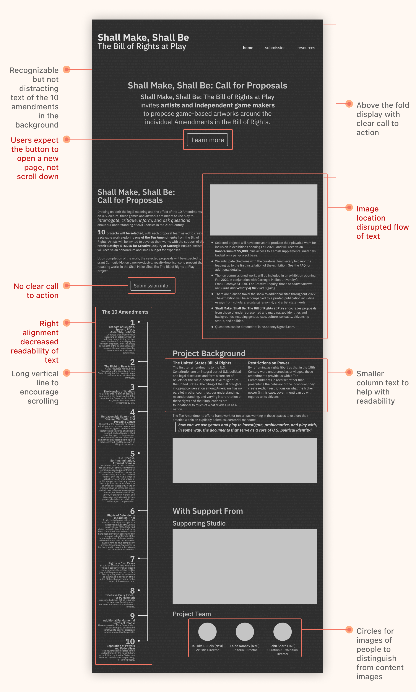
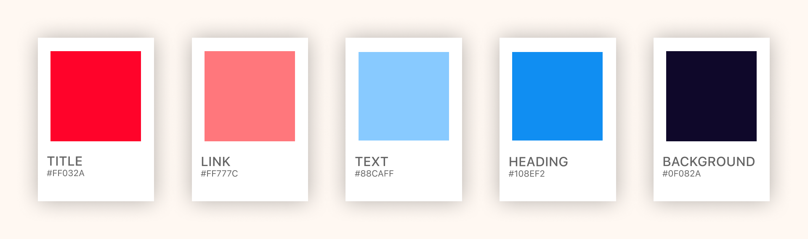
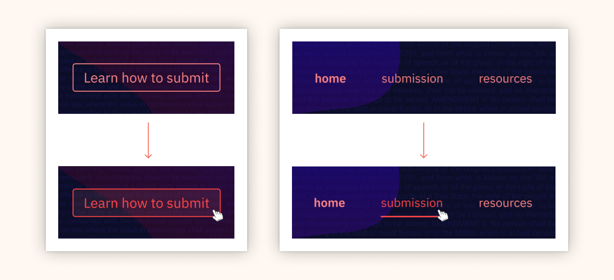

Problem
The current website needs to better appeal to artists and game-makers to submit proposals in line with the theme.
Insight
There needs to be an intentional use of grid, color, typography, and information architecture. All of these need to be tied together to the theme.
Outcome
An interactive prototype of a website redesign that creatively incorporates the ten amendments to the game theme of the project proposal
Typographic Signals
I learned how typographic signals created very different effects. Line spaces generally broke text for easier readability, while higher weights drew user attention as either emphasized text or titles. Smaller text discouraged users from reading the entire portion because it seemed like fine print material.
Color Theory
I learned about different color theories and experimented with color combinations. The image below shows that color is relative: the inner squares are the same color, but they appear different.
Grid
My biggest takeaway from this experimentation was that grids contain, not constrain elements. It gives designers a visual starting point rather than a blank canvas. One grid opens different layout possibilities:
Information Architecture
I analyzed the relationship and hierarchy of different elements on the website and organized them into this information architecture:
Med-Fidelity Prototype
Listed below are some design intentions and feedback from critique sessions on the home page
Color Palette
Interaction Design
Lessons Learned
In every step of the process, I learned something new that I could
apply to my future designs – type, grid, color, IA, wireframing, and
prototyping are all essential skills for a designer.
This fast-paced project pushed me to learn quickly and reimagine how
a theme can take many different forms. I would have never thought of
combining game and the ten amendments, but these two themes can come
together cohesively with research and intentional design.